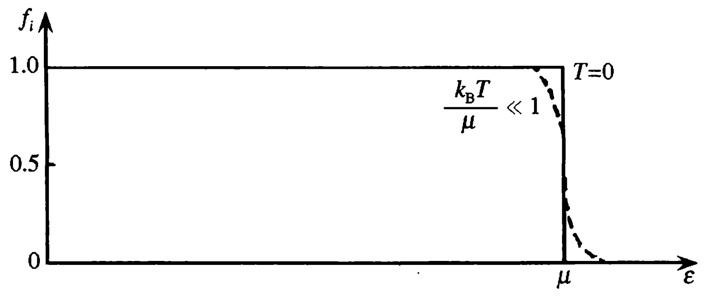

自由电子气体热性质
T不为0时N个电子本征态的分布不再是简单的泡利不相容原里，而是由费米-狄拉克分布函数给出。 全同费米子系统中粒子不可分辨，费米子遵从泡利不相容原理，每一量子态容纳的粒子数不能超过一个。 对于粒子数、体积和总能量确定的费米子系统，当温度为T时 ，处在能量为E的量子态上的平均粒子数为
T趋于0时f在能量小于化学式μ时为1，在大于时为0，此时μ趋于费米能量ε0
因此仅有能量在u附近的电子可以被热激发（其他能量下的分布概率都是1了就确定了嘛(●'◡'●)）
T不为0时自由电子气单位体积内能(即化学式μ)可以由费米分布函数给出
将对k的积分改为对能量ε的积分
求和过度为积分的规则为
需要计算的积分为
有变量k和ε，可通过前一节中的电子态密度函数g(ε)联系起来
带回薛定谔方程可球的能量
k为波长，由德布罗意关系可求出动量p，继而有电子能量，与刚才的相同＜（＾－＾）＞
周期性边界条件
代回方程可解得
得出结论：单电子本征能量取分立值，显然如果以k做空间矢量的话，每两个点之间的距离为2pi/L，则每个允许的波矢k占据的体积
k空间的态密度可以用1除以每个点在k空间的体积

由泡利不相容原理，每个许可的k态上只有两个不同的自选投影可取
N个电子从能量最低的k=0开始，也就是k空间的原点，能量从低到高逐渐填充，最后占据的区域形成一个费米球，半径为费米波矢
在费米球中的态的总数应该等于电子总数目。态总数为2（两个自旋态）乘态密度乘费米球体积。
自由电子气的总能量为费米球内所有单电子能量和
把k空间的态密度代入，再取V->无穷大的极限，求和变为积分